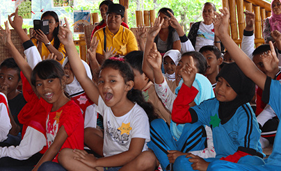
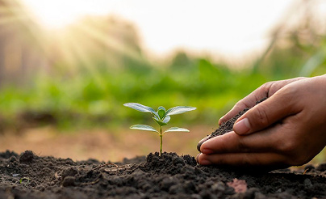
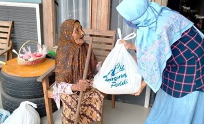
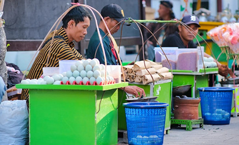
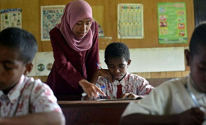
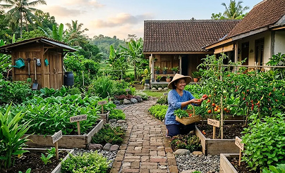

KABAR PPP / ARSIP EDITORIAL
Membaca gagasan,
memahami keseharian.
Arsip editorial tentang pendidikan, lingkungan, kepedulian sosial, dan ekonomi masyarakat.
6 artikel contoh · Semua kategori

LINGKUNGAN ·
Perubahan Dimulai dari Rumah: Langkah Kecil Merawat Bumi
Langkah kecil yang bisa menjadi percakapan bersama tentang sampah, air, dan ruang hijau.
Baca artikel
SOSIAL DAN KEMANUSIAAN ·
Bukan Sekadar Bantuan, Kepedulian yang Menjaga Martabat
Mengapa mendengar kebutuhan dan menjaga pilihan warga penting dalam setiap bentuk kepedulian.
Baca artikel
EKONOMI MASYARAKAT ·
Dari Usaha Kecil, Tumbuh Peluang Besar bagi Masyarakat
Literasi usaha dan pertukaran pengalaman sebagai gagasan penguatan ekonomi di lingkungan sekitar.
Baca artikel
PENDIDIKAN ·
Belajar Tanpa Batas: Kesempatan yang Layak untuk Semua
Memahami kebutuhan akses belajar yang beragam, dari pilihan waktu hingga format materi yang mudah dibaca.
Baca artikel
LINGKUNGAN ·
Lebih dari Sekadar Taman, Ruang Hijau yang Menyatukan Warga
Kebun komunitas dapat dibayangkan sebagai tempat bertukar pengetahuan dan merawat lingkungan.
Baca artikelArtikel tidak ditemukan
Coba gunakan kata kunci lain atau pilih kategori artikel yang berbeda.
Halaman 1 dari 1
Seluruh contoh ditampilkan